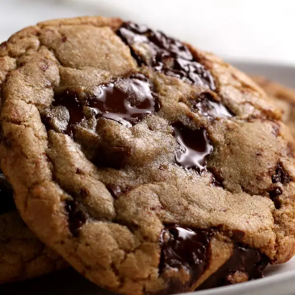

Chocolate chip cookies

Description
Amazing chocolate chip cookies from Tasty.com
Ingredients
- 100g Granulated sugar
- 165g Brown suga
- 1tsp Salt
- 115g Unsalted butter
- 1 Large egg
- 1tsp Vanilla extract
- 155g All-purpose flour
- 1tsp Baking soda
- 110g Milk or semi-sweet chocolate chunks
- 110g Dark chocolate chunks
Steps
- In a large bowl, whisk together the sugars, salt, and butter until a paste forms with no lumps.
- Whisk in the egg and vanilla, beating until light ribbons fall off the whisk and remain for a short while before falling back into the mixture.
- Sift in the flour and baking soda, then fold the mixture with a spatula (Be careful not to overmix, which would cause the gluten in the flour to toughen resulting in cakier cookies).
- Fold in the chocolate chunks, then chill the dough for at least 30 minutes. For a more intense toffee-like flavor and deeper color, chill the dough overnight. The longer the dough rests, the more complex its flavor will be.
- Preheat oven to 180°C. Line a baking sheet with parchment paper.
- Scoop the dough with an ice-cream scoop onto a parchment paper-lined baking sheet, leaving at least 10cm of space between cookies and 5cm of space from the edges of the pan so that the cookies can spread evenly.
- Bake for 12-15 minutes, until the edges have started to barely brown.
- Cool completely before serving.
- Enjoy!
Home